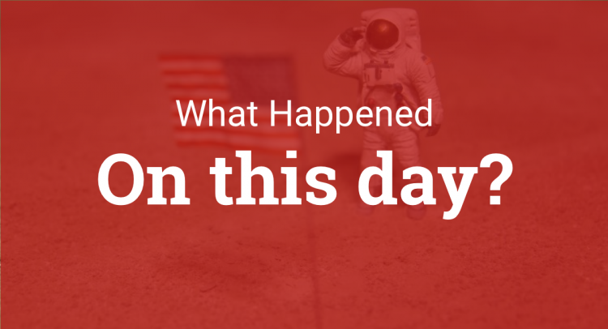

On this day...
- 1809: Napoleonic Wars: The War of the Fifth Coalition began when Austria invaded Bavaria.
- 1858: Big Ben, the bell in the Palace of Westminster's clock tower in London, was cast after the original bell had cracked during testing.
- 1925: The novel The Great Gatsby by F. Scott Fitzgerald was first published.
- 1944: The Holocaust: Rudolf Vrba and Alfred Wetzler escaped from Auschwitz; their report was one of the earliest and most detailed descriptions of the mass killings in the camp.
- 1992: Nagorno-Karabakh War: At least 40 Armenian civilians were massacred in Maraga, Azerbaijan.
In the news today..
Tim Berners-Lee wins the Turing Award for inventing the World Wide Web, the first web browser, and the protocols and algorithms that allow the Web to scale.
Sir Timothy John Berners-Lee (OM KBE FRS FREng FRSA FBCS) (born 8 June 1955), also known as TimBL, is an English computer scientist, best known as the inventor of the World Wide Web. He made a proposal for an information management system in March 1989, and he implemented the first successful communication between a Hypertext Transfer Protocol (HTTP) client and server via the Internet in mid-November the same year.
References:
Wanna send us an email!